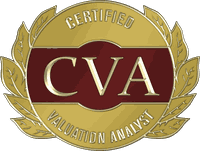

Jorge J. Jiménez Soto, CVA fundó y dirige AXIS Independent Advisory. Es Analista de Valoración Certificado (CVA). Su trayectoria abarca valoración de empresas, apoyo en litigios, asesoría en fusiones y adquisiciones y transacciones, FP&A y modelación financiera, finanzas corporativas, y tesorería y análisis financiero — aportando disciplina de valoración y una perspectiva financiera práctica a los negocios privados de Puerto Rico.
AXIS es una práctica de asesoría independiente enfocada en valoración de empresas. No es una firma de CPA y no presta servicios de atestación ni auditoría. Las menciones de experiencia profesional describen el trasfondo individual y no implican afiliación ni patrocinio de un empleador actual.
AXIS Independent Advisory es una práctica independiente enfocada en valoración de empresas y asesoría relacionada para negocios de capital cerrado en Puerto Rico.
Un eje (axis) ofrece un centro estable alrededor del cual algo se mueve. Los dueños de negocio necesitan un punto de referencia claro sobre lo que han construido y lo que puede valer. Ese es el trabajo para el que se fundó AXIS.
Jorge fundó AXIS tras trabajar en valoración, asesoría en transacciones, modelación, finanzas corporativas y tesorería. La práctica une la credencial CVA con un enfoque exclusivo en negocios privados de Puerto Rico: la valoración no es un servicio paralelo aquí; es toda la práctica.
No tenemos interés financiero en el resultado de ninguna valoración. Sin comisiones de corretaje. Sin honorarios de asesoría atados al valor de una transacción. Nuestro único producto es una cifra objetiva y defendible.
Entendemos el entorno regulatorio de Puerto Rico, las estructuras de incentivos contributivos, las normas de crédito y la dinámica de operaciones familiares y de capital cerrado. Nuestros modelos se calibran para los negocios que realmente operan aquí.
Los Encargos de Cálculo de AXIS se elaboran e informan con referencia a los Estándares Profesionales de NACVA. El alcance se ajusta a la necesidad — un Path A / PVA enfocado o un Cálculo de Valor ampliado — sin igualar rigor únicamente con extensión.
Para firmas de CPA y asesores, operamos como una extensión de su práctica — no como competidores por sus relaciones con clientes. Sus clientes siguen siendo suyos. Nosotros aportamos el análisis especializado detrás de escena.

Los Encargos de Cálculo de AXIS se elaboran e informan con referencia a los Estándares Profesionales de NACVA — el marco que orienta cómo se delimita, divulga y presenta el trabajo de cálculo en un Informe de Cálculo. NACVA no respalda a AXIS como firma.
Un marco de valoración que muchos CPA ya reconocen. AXIS puede describir su trabajo de cálculo en términos familiares para asesores que trabajan bajo SSVS-1; eso no implica membresía de AXIS en AICPA, clasificación de encargo bajo SSVS-1 ni respaldo de AICPA.
Los Uniform Standards of Professional Appraisal Practice informan expectativas de ética y competencia en disciplinas de tasación. AXIS no reclama práctica de tasación certificada bajo USPAP ni respaldo de USPAP; cualquier lenguaje específico de alineación con USPAP pertenece a la carta de encargo y al informe cuando esté establecido.
Los dueños que ya tienen un Cálculo de Valor de AXIS pueden preguntar más adelante por el Soporte Continuo de Valoración. Distinta de esa oferta de continuidad, la Evaluación Preliminar de Valor (PVA) es el Encargo de Cálculo Path A enfocado de AXIS — un Valor Calculado en un Informe de Cálculo dentro de un alcance acordado más estrecho. Vea cómo funciona →
La independencia no es una limitación: es la base de un análisis creíble. Respondemos a los estándares y a los datos, no a un resultado predeterminado.
¿Listo para conversar sobre un encargo?